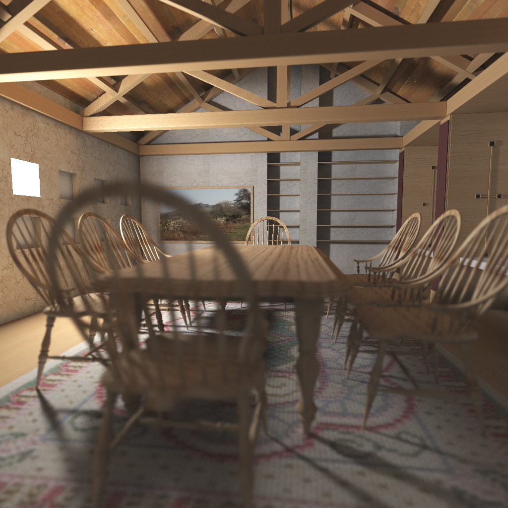
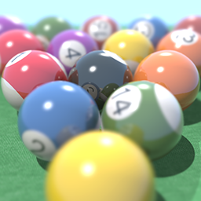
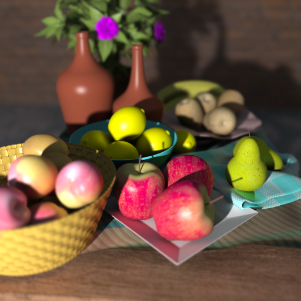
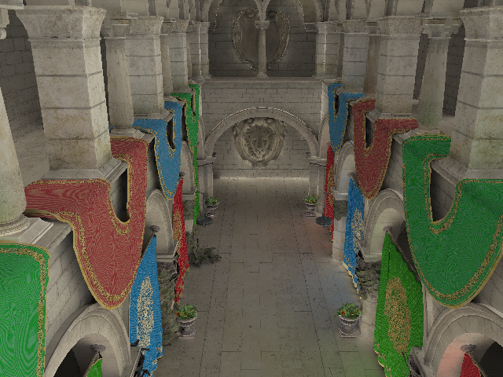
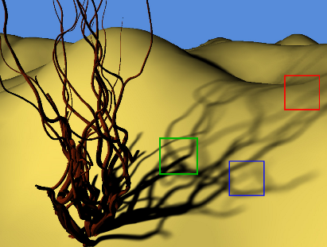

Publications
ACM Author Page |
Google Scholar Page
|  | Axis-aligned Filtering for Interactive Physically-based Rendering. [PDF] | |
Filtering Environment Illumination for Interactive Physically-Based Rendering in Mixed Reality. Presented at EGSR 2015, Darmsdadt (Germany). [PDF] [Project Page] | ||
|  | Fast 4D Sheared Filtering for Interactive Rendering of Distribution Effects. Published in ACM Transactions on Graphics, 2015 [PDF] [DL] [Project Page] | |
|  | Factored Axis-Aligned Filtering for Rendering Multiple Distribution Effects. Presented at Siggraph 2014, Vancouver. [PDF] [DL] [Project Page] |
|
|  | Axis-Aligned Filtering for Interactive Physically-Based Diffuse Indirect Lighting. Presented at Siggraph 2013, Anaheim. [PDF] [DL] [Project Page] |
|
|  | Axis-Aligned Filtering for Interactive Sampled Soft Shadows. Presented at Siggraph Asia 2012, Singapore. [PDF] [DL] [Project Page] |
|
Analytic Tangent Irradiance Environment Maps for Anisotropic Surfaces. Presented at Eurographics Symposium on Rendering 2012, Paris. [PDF] [DL] [Project Page] |